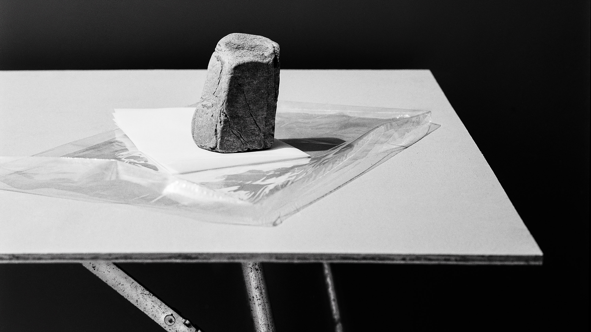
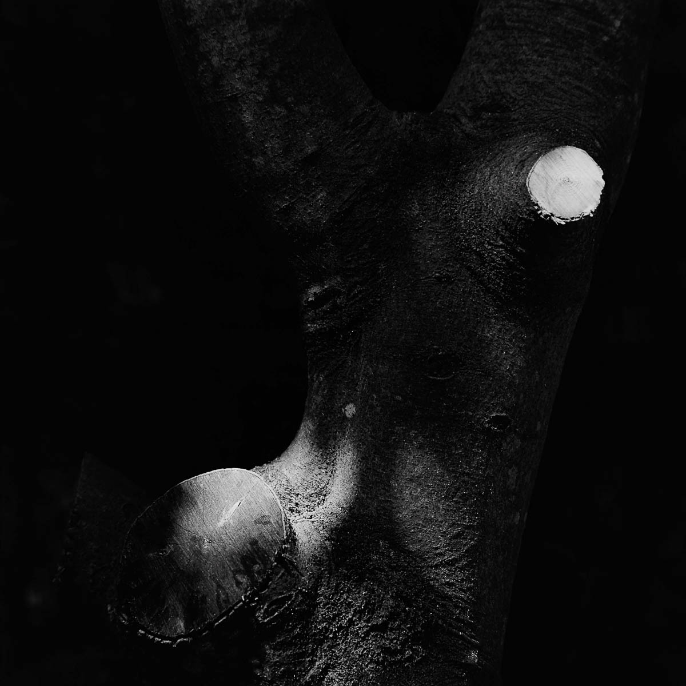
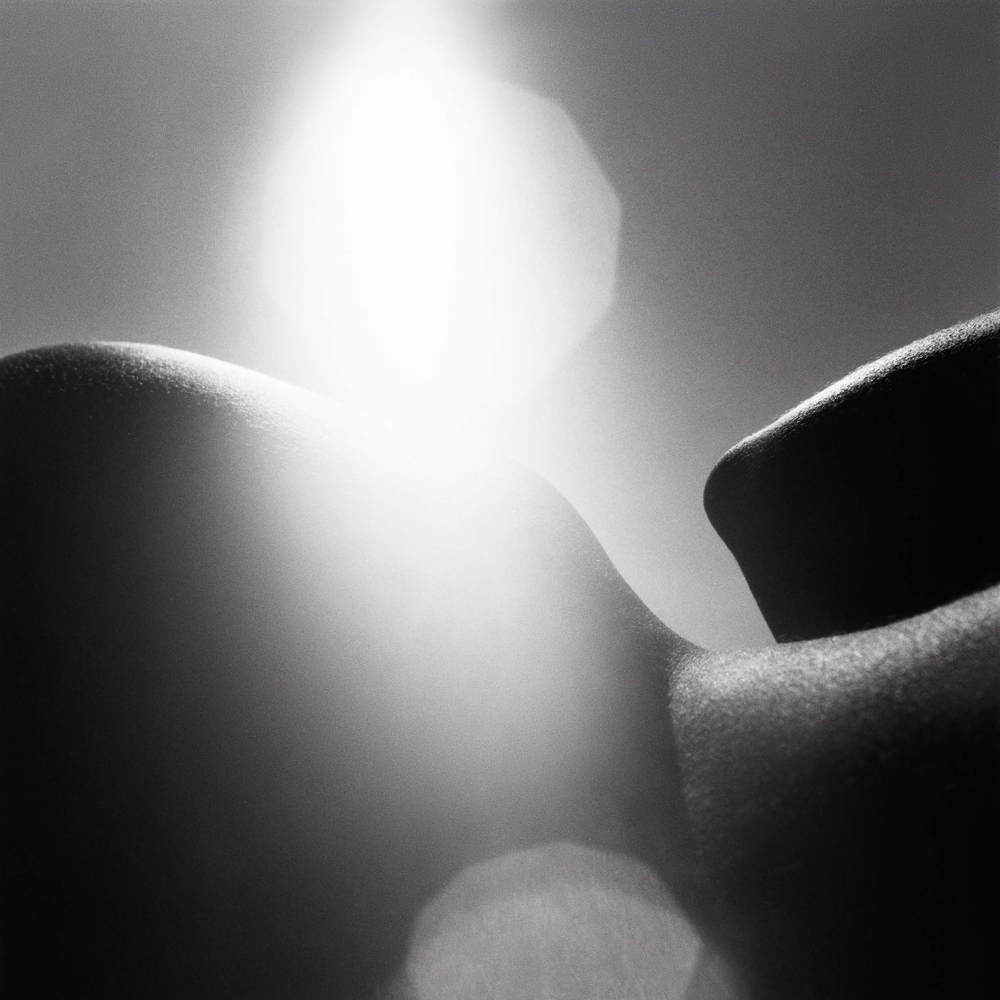
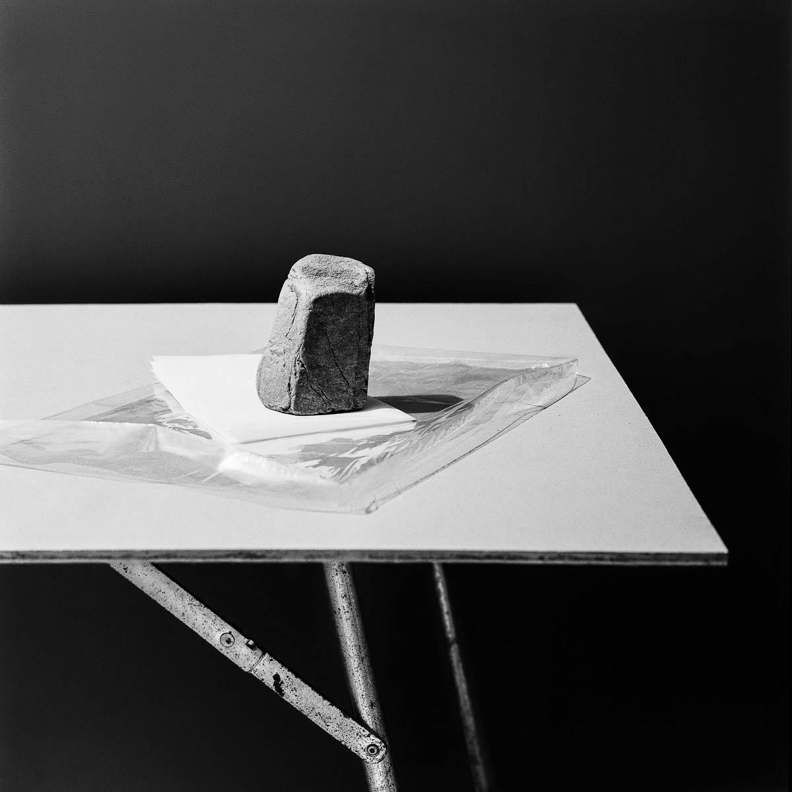

new
05/04/2025

A simple life by Emmanuel Pineau
There was a time when everything was new. Every place, every experience, every person. The direction wasn’t clear, but there was a road ahead of me, and I followed it. That was in 1993 and I was 21 years old.
Using analog photography, « A Simple Life » highlights the charm of imperfection and the value of slowing down. Each photo is a gentle nudge to pause, take a breath, and appreciate the world around us.
More about this series


